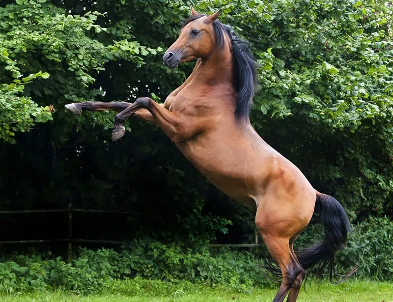
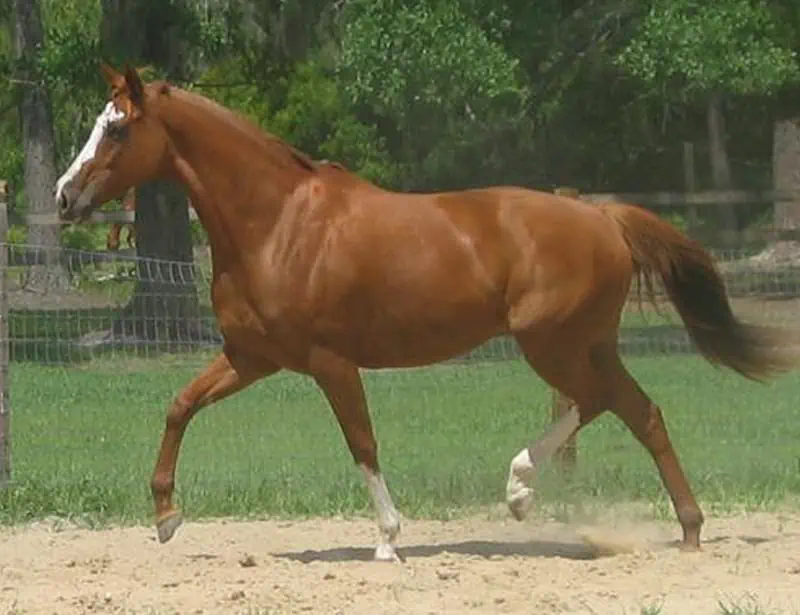
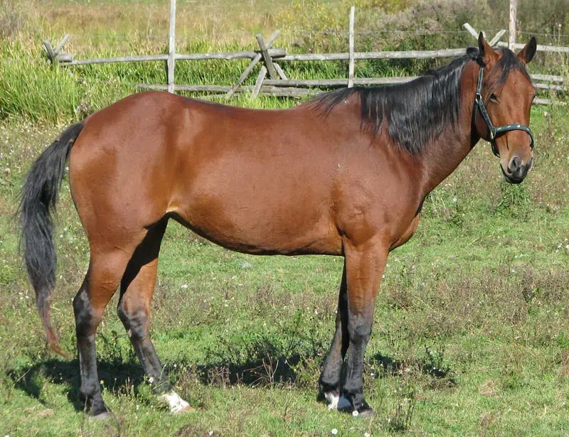
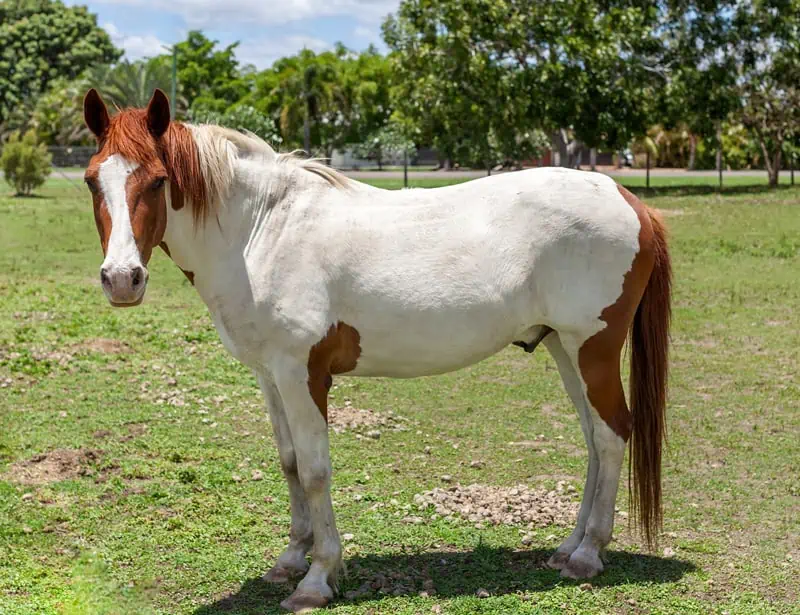

Types of Horses
1-Arabian Horse

The Arabian Horse is one of the world’s oldest equine breeds and is native to the deserts of the Arabian Peninsula.
Moreover, the Bedouin tribes became the first horse whisperers, valuing their hardiness, strength, and stamina.
People have also bred Arabians with carriage horses, which became war horses used since the Middle Ages.
Additionally, the Arabian Horse has a head shape known as the 'dished face' and large, expressive eyes. They have broad nostrils and a soft muzzle. They also hold their tail high.
Measuring approximately 14.1 to 15.1 hands high, the Arabian Horse excels in endurance riding, dressage, show-jumping, and Western-style events.
2-Thoroughbred Horse

Thoroughbred horses, with a diverse lineage, originated in England during the 17th and 18th centuries. They come from British and Middle Eastern horse lines, featuring athleticism and a multicultural heritage.
Standing at 15.2 to 17 hands high, thoroughbred horses have elongated necks, compact backs, lean bodies, and muscular hindquarters. Their coats range from pearly white to jet black, with chestnut and gray as popular shades.
Thoroughbred horses are skilled racehorses that excel in show jumping, dressage, and polo—horse enthusiasts like their adaptability and versatility, particularly their ability to perform various activities.
3-American Quarter Horse

The Quarter Horse is a longstanding symbol of America's Wild West. Its name comes from its exceptional speed over a quarter-mile, even faster than the fastest Thoroughbreds2.
Moreover, the Quarter Horse has a muscular physique with strong hindquarters. Its variety of colors includes sorrel and bay.
Originally bred on cattle ranches in the West, this breed has developed a calm temperament and high intelligence, making it easy to train and ideal for various settings. The Quarter Horse can thrive on tranquil trail rides and is perfect for pleasure riding in bustling families.
Additionally, they have a solid intuition–“cow sense"--that goes back to their origins as working ranch horses. This intuition enables them to anticipate and respond to cattle movements accurately. Moreover, this “cow sense” has made them reliable ranch animals despite increasing reliance on machines.
4-Paint Horse

The Paint Horse blends Western stock horse and spotted horse genes with ancestry from Thoroughbred and Quarter Horse lineages. This genetic combination gives the Paint Horse strength, agility, and the ability to maneuver western riding and leisurely trails.
Each Paint Horse has a distinctive pattern, typically categorized into two types: tobiano and overo.
For example, Tobiano Paints has white hair extending over the back between the horse's withers and tail, with a sharper and more uniform color.
In contrast, Overo Paints have scattered and irregular markings, their color usually concentrated on the sides and rarely extending to the back.
Moreover, Paint Horses are loyal, kind, and intelligent, which makes them popular among families worldwide.